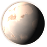 Proxima Cen bRocky · frozen | 1.01 g | −55 °C | 4.2 ly | Land → |
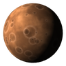 Barnard bAirless rock | 0.58 g | 165 °C | 6 ly | Land → |
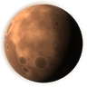 Ross 128 bRocky · arid | 1.14 g | 28 °C | 11 ly | Land → |
| Teegarden's Star bRocky · temperate | 1.05 g | 4 °C | 12.5 ly | Land → |
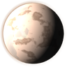 GJ 1002 bRocky · frozen | 1.02 g | −42 °C | 15.8 ly | Land → |
| GJ 367 bIron lava world | 0.93 g | 1,056 °C | 30.7 ly | Land → |
| Wolf 1069 bRocky · frozen | 1.08 g | −23 °C | 31.3 ly | Land → |
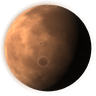 Gliese 12 bRocky · arid | 1.1 g | 42 °C | 39.8 ly | Land → |
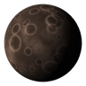 TRAPPIST-1 bAirless rock | 1.1 g | 125 °C | 40.5 ly | Land → |
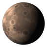 TRAPPIST-1 cAirless rock | 1.09 g | 67 °C | 40.5 ly | Land → |
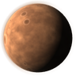 TRAPPIST-1 dRocky · arid | 0.62 g | 13 °C | 40.5 ly | Land → |
| TRAPPIST-1 eRocky · temperate | 0.82 g | −23 °C | 40.5 ly | Land → |
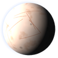 TRAPPIST-1 fIce world | 0.95 g | −55 °C | 40.5 ly | Land → |
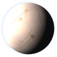 TRAPPIST-1 gIce world | 1.04 g | −76 °C | 40.5 ly | Land → |
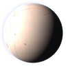 TRAPPIST-1 hIce world | 0.57 g | −101 °C | 40.5 ly | Land → |
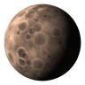 LHS 475 bAirless rock | 0.96 g | 313 °C | 40.7 ly | Land → |
| 55 Cnc eLava world | 2.27 g | 1,685 °C | 41 ly | Land → |
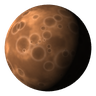 GJ 1132 bAirless rock | 1.29 g | 311 °C | 41.1 ly | Land → |
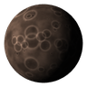 LHS 3844 bAirless rock | 1.43 g | 543 °C | 48.5 ly | Land → |
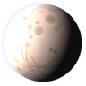 LHS 1140 bIce world | 1.87 g | −47 °C | 48.9 ly | Land → |
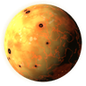 LP 791-18 dVolcanic · sulfur | 0.85 g | 123 °C | 86.4 ly | Land → |
| TOI-1452 bOcean world | 1.72 g | 53 °C | 99.5 ly | Land → |
| TOI-700 dRocky · temperate | 1.2 g | −4 °C | 102 ly | Land → |
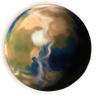 TOI-700 eRocky · temperate | 0.85 g | 0 °C | 102 ly | Land → |
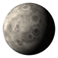 Kepler-444 bAirless rock | 0.23 g | 665 °C | 119 ly | Land → |
| K2-18 bHycean | 1.59 g | 11 °C | 124 ly | Land → |
| TOI-715 bRocky · frozen | 1.26 g | −39 °C | 138 ly | Land → |
| K2-141 bLava world | 2.18 g | 1,830 °C | 202 ly | Land → |
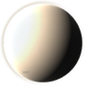 Kepler-138 dSteam world | 0.92 g | 72 °C | 218 ly | Land → |
| TOI-561 bLava world | 1.03 g | 2,046 °C | 280 ly | Land → |
| Kepler-1649 cRocky · temperate | 1.07 g | −39 °C | 301 ly | Land → |
| Kepler-78 bLava world | 1.17 g | 1,950 °C | 406 ly | Land → |
| CoRoT-7 bLava world | 1.44 g | 1,483 °C | 522 ly | Land → |
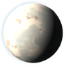 Kepler-186 fRocky · frozen | 1.25 g | −96 °C | 579 ly | Land → |
| Kepler-10 bLava world | 1.5 g | 1,915 °C | 605 ly | Land → |
| Kepler-22 bOcean world | 2.06 g | 6 °C | 635 ly | Land → |
| TOI-849 bIron lava world | 3.15 g | 1,659 °C | 736 ly | Land → |
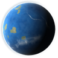 Kepler-62 fOcean world | 1.8 g | −65 °C | 981 ly | Land → |
| Kepler-442 bRocky · temperate | 1.31 g | −32 °C | 1,194 ly | Land → |
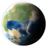 Kepler-452 bRocky · temperate | 1.24 g | −8 °C | 1,800 ly | Land → |
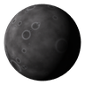 PSR B1257+12 cAirless rock | 1.18 g | −98 °C | 1,957 ly | Land → |
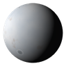 OGLE-2005-BLG-390L bIce world | 1.13 g | −223 °C | 21,500 ly | Land → |